Guide › Living together, newlyweds, album, family
Living together, newlyweds, album and family guide
Everything about family content: living together, dream homes, newlywed life, heroine tastes, chores, babies and parenting, the 5 child endings, the family album and divorce
- 🏠 For living together, all you need while dating is a home (the cheapest $53.8K studio is enough) and she suggests it herself. Accept and her messages cost half price all the way until you break up.
- 💐 Newlywed life opens only if you buy her dream home within 15 weeks of marriage. For 15 weeks a romantic event comes every week, and the baby condition (chores) is halved.
- 👶 A baby needs 15 weeks of marriage + 29 chores (15 as newlyweds) + 30 overflow love. To raise the child to university you need at least 16 weeks after the birth, answering every child message with ①.
- 📷 The family album opens when the baby is born, and closes with a The End stamp once the university choice is made.
- ⚠️ Living together and newlyweds are for 9 heroines only, tastes for 6 only, and Hannah, Sophie, Claire and Angie have no children (table below).
What each heroine can do, at a glance 🗂️#
Look at this table first. It matters more than you think when you choose who to marry. Marry a heroine you cannot live with and the Just the Two of Us tab, newlywed life and dream home endings are gone entirely.
| Heroine | Living together | Newlyweds (dream home) | Taste | Child | Child's name |
|---|---|---|---|---|---|
| Emily | ⭕ | ⭕ Riverview loft studio | ⭕ | ⭕ | Lucas (a son) |
| Rachel | ⭕ | ⭕ Dawn Bay new 3-bed | ⭕ | ⭕ | Mia (a daughter) |
| Megan | ⭕ | ⭕ Cache one-room studio | ⭕ | ⭕ | Noah (a son) |
| Chloe | ⭕ | ⭕ Legacy one-room studio | ⭕ | ⭕ | Ella (a daughter) |
| Brooke | ⭕ | ⭕ Riverview riverside penthouse | ⭕ | ⭕ | Leo (a son) |
| Lauren | ⭕ | ⭕ Hotfix house with a big yard | ⭕ | ⭕ | Ruby (a daughter) |
| Zoe | ⭕ | ⭕ Dawn Bay station studio | ❌ | ⭕ | Ivy (a daughter) |
| Kayla | ⭕ | ⭕ Server Range log cabin | ❌ | ⭕ | Ethan (a son) |
| Amanda | ⭕ | ⭕ Debug lakeside villa | ❌ | ⭕ | Nora (a daughter) |
| Hannah | ❌ | ❌ | ❌ | ❌ None | — |
| Sophie | ❌ | ❌ | ❌ | ❌ None | — |
| Claire | ❌ | ❌ | ❌ | ❌ None | — |
| Angie | ❌ | ❌ | ❌ | ❌ None | — |
You only meet Zoe, Kayla and Amanda in runs with the Dev influencer title. Hannah is only for runs with the The patron title. Hannah, Sophie, Claire and Angie never bring up a baby at all, and while you date or are married to one of these 4, the Album tab does not show either.
Even with a heroine you cannot live with, marriage needs chores just the same. A week with 0 chores is affinity −30, and at affinity 0 the divorce talk comes.
The whole family route 🧭#
- Start datingAccept a confession and start dating (girlfriend), and she appears in the Family tab. The crush and dating process is in the rules shared by every heroine.
- Buy a home → live togetherBuy any home, a studio or bigger, in Invest tab → Real estate, and 2 weeks later she says I want to move in with you.
- MarriageBuild up dates and get the proposal. Once married, the Date slot disappears from your schedule and + Help with housework appears.
- Dream home → 15 weeks of newlywed lifeBuy the dream home she hinted at within 15 weeks of marriage and the newlywed offer comes.
- Fill her tastes(6 heroines only) Buy her every item she wanted during newlywed life too, and she says Now I have everything.
- BabyOnce 15 weeks of marriage, chores and overflow love are met, the baby talk comes. It does not come during newlywed life.
- Parenting → universityRaise them with the weekly parenting slot and child messages: kindergarten → elementary → middle → high school → university. At each stage the child sends a future-path message.
- Week 100If you are still married then, the marriage, living together, newlywed, taste, child and supportive spouse endings are all recorded at once 🎉
Living together 💞#
Girlfriend + your own home (a studio or bigger) = the move-in offer. Accept and her messages cost half, but other heroines go quiet.
Conditions for the move-in offer#
| Condition | Details |
|---|---|
| Relationship | Dating (girlfriend). From the week after you start dating |
| Home | Own 1 studio, officetel, apartment or country house/villa (shop units, warehouses, resorts and farmland are not homes) |
| Timing | If you already had a home, it comes right at the end of the week you start dating (the first close). If you bought it around then or later, it comes at the end of the week after you bought it (not right when you buy) |
| How often | Once per run. Decline it or leave it on read and it does not come again that run |
The cheapest home is the Legacy furnished studio at $53.8K in Legacy Old Town. Even its in-game description says the least a girlfriend will move in to. The Invest tab (including real estate) opens at the close of the first week your balance goes over $15.4K.
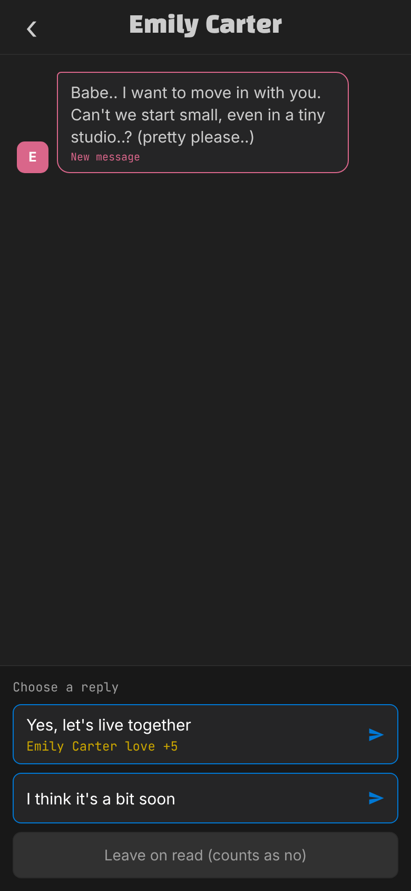
| Reply | Result |
|---|---|
| Sure, let's live together | You move in together, affinity +5. The Just the Two of Us tab opens and a 💞 Moved in together line is drawn |
| I think it's a bit early | Okay.. I get it. Over for this run (no penalty) |
| (left on read) | Same as declining |
What changes when you live together#
- 💸 Half price: every reply that costs money in messages she sends is half price. Next to the reply you see 💞 Living together: half price (was …). Just the Two of Us messages and parenting messages after marriage are from her too, so they are all half price.
- 💍 It continues after marriage: live together and then marry, and half price lasts until a divorce. On the other hand, marry straight away without living together → newlyweds, and there is no half price.
- 🔕 Other heroines go quiet: while you live together (including after marriage), messages from other heroines do not come.
- 🏡 You can't sell our home: tap sell on the 1 home you share (the dream home if you have it, otherwise the cheapest home) and you get Babe.. if you sell this, where are we supposed to live...? and it does not sell. For the dream home it is Babe.. this is our dream home.. Other listings sell freely.
- 💭 Dream home hints: while you live together, every 3 weeks she lets her dream home slip in Just the Two of Us, as if talking to herself. That is your cue to get ready for newlywed life.
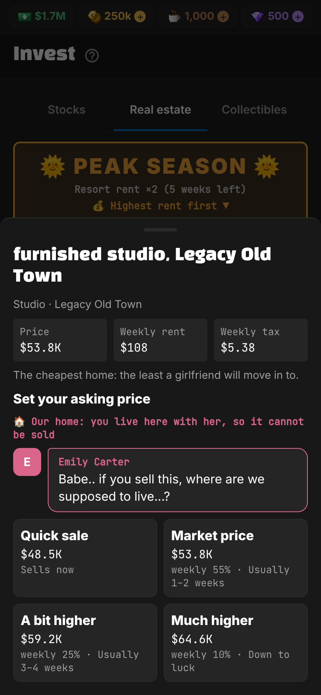
Musings that need no reply come every 3 weeks. During the crush stage, your closest crush says My place feels so quiet lately, living alone.. it'd be nice to have someone around; while dating with no home, Sigh.. if we just had a studio, even a tiny one, we could live together.. 🥲. When you see these, it is time to buy her a studio.
The living together ending needs you to be together when the run ends (living together, or married after that). Break up or divorce partway and it is not recorded. And if you marry without living together, you can never see this ending. Always live together first, before marriage.
The 9 dream homes 🏡#
Each heroine's dream home is 1 set listing. The listing name and starting price are the same every run, and it moves up and down with the market. Similar listings in the same neighborhood do not count, so always check the name.
| Heroine | Dream home (listing name) | Area | Type | Starting price |
|---|---|---|---|---|
| Chloe | Legacy one-room studio | Legacy Old Town | Officetel | $131K |
| Zoe | Dawn Bay station studio | Dawn Bay New Town | Officetel | $177K |
| Megan | Cache one-room studio | Cache Harbor | Officetel | $192K |
| Emily | Riverview loft studio | Riverview City | Officetel | $208K |
| Amanda | Debug lakeside villa | Debug Woods | Country house/villa | $615K |
| Kayla | Server Range log cabin | Server Range | Country house/villa | $815K |
| Lauren | Hotfix house with a big yard | Hotfix Beach | Country house/villa | $1M |
| Rachel | Dawn Bay new 3-bed | Dawn Bay New Town | Apartment | $1.4M |
| Brooke | Riverview riverside penthouse | Riverview City | Apartment | $1.8M |
A dream home is a home too, so it also counts for the move-in offer. For heroines whose home is around $200K, like Chloe, Zoe, Megan and Emily, it pays to buy the dream home right away instead of a studio and set up living together → marriage → newlyweds in one go. A dream home you bought before marriage also meets the newlywed condition.
Newlyweds 💐#
Married + dream home within 15 weeks → accept the newlywed offer → 15 weeks of newlywed life. A romantic event every week (costs a lot), and the baby condition is halved.
Conditions for the newlywed offer#
| Condition | Details |
|---|---|
| Relationship | Married, from the week after the wedding up to 15 weeks after the wedding |
| Home | Own her dream home. If you bought it after marriage, the offer comes at the end of the week after you bought it |
| Living together | Not needed (even without living together, the dream home alone is enough) |
| How often | Once per run. Not right now… or leaving it on read ends it |
The offer is Babe! I want the sweetest newlywed life with you! Let's go on a honeymoon? The moment you tap Yes, honeymoon time! (affinity +5), a 💐 Just married line is drawn and the label next to her name becomes Newlywed. After 15 weeks she is your Wife again.
The offer comes at the end of the week after you buy the dream home, and if that falls past 15 weeks after the wedding, it never comes. Buy it within week 13 of marriage. Safest of all is buying it before the wedding (then it comes the week right after).
15 weeks of newlywed life: a romantic event every week#
During newlywed life, 1 of 15 newlywed lines comes in Just the Two of Us every week. The first reply (mostly) spends money and raises affinity a lot; the second reply is affinity −15 to −20.
| Line (her) | First reply | Money | Affinity |
|---|---|---|---|
| The riverside tonight? You're up to something, aren't you? | 🚁 Spell out her name in the sky with drones | −$76.9K | +30 |
| The sea breeze feels amazing… Tonight feels kinda special. | I planned fireworks | −$23.1K | +21 |
| I wonder what it feels like to watch a sunset out on the sea. | I rented us a yacht | −$15.4K | +19 |
| My wedding ring got scratched… I'm so upset. | Let's get new rings | −$11.5K | +16 |
| Pack a bag right now?! Where are we going?! | We're off to a tropical island | −$9,231 | +15 |
| Hot-air balloon, renewing your vows, flowers, a suite, candlelit dinner, a photo studio | (each) | −$615 to −$2,308 | +4~+5 |
| 100-day gift, lantern festival | (each) | −$385, −$77 | +3 |
| Sing me a song, you'll love me forever, right? | (each) | 0 | +3 |
Leaving a living-together line on read does nothing, but leaving a newlywed line on read counts as the second reply (−15 to −20). Even with no money, at least answer the lines that cost nothing.
If you married after living together, newlywed lines are half price too (the drones are −$38.5K). The big affinity gains here pile up as overflow love past 100, filling the baby condition (30 overflow) and relationship perks in one go.
The honeymoon (if you own an island resort)#
If you own a pension or resort on Cloud Isle or the Cookie Isles during newlywed life, Babe!! Let's do our honeymoon at our island resort 🏝️ comes first that week as a Just the Two of Us message. Honeymoon, let's go! is −$15.4K (half for couples who lived together), affinity +10, stress −20 / After I wrap up work is affinity −2. Leaving this message on read is affinity −15, so with no money, at least tap After I wrap up work. How the islands open is in the Investing guide.
The Just the Two of Us tab 💬#
Just the Two of Us in the top row of the messenger is a chat room just for the two of you. It opens when you move in together or start newlywed life (before that it says 🔒 Opens once you live together or start newlywed life.), and closes on divorce.
| When | What comes | If left on read |
|---|---|---|
| Living together (dating) | 1 everyday line a week (60 kinds) + a dream home hint every 3 weeks | Nothing happens |
| The first 15 weeks of marriage for a couple who lived together | 1 everyday line a week (if you did not turn down the newlywed offer) | Nothing happens |
| 15 weeks of newlywed life | 1 newlywed line a week (15 kinds) + taste musings | The second reply (−15 to −20) |
| After that (married) | Those were the days 😌 once → a Those were the days... line, then the tab goes quiet | It has only 1 reply, so it counts as answered (affinity +3) |
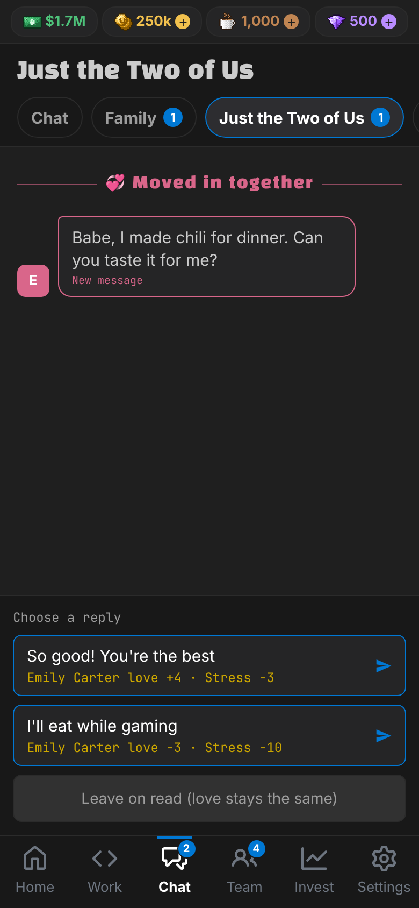
Heroine tastes: making all her dreams come true 🌟#
The 6 everyday heroines (Emily, Rachel, Megan, Chloe, Brooke, Lauren) want more than the dream home. During newlywed life, every week she mentions one thing she does not have yet, talking to herself in Just the Two of Us. Have the dream home + all of it during newlywed life and I have everything now. My dream home.. my dream things.. all of it.. and you.. I love you. I want to live with you in the next life too❤️ comes once in yellow text, and the taste ending opens.
- What you need
- Limited figure ($846), Retro console ($3,462), Limited sneakers ($1,846)
- Total including the dream home
- About $198K (starting prices)
- What you need
- A studio for a study (1 officetel or studio other than the dream home), Dive watch ($29.2K)
- Total including the dream home
- About $214K (with the $53.8K studio)
- What you need
- Painting ($1.2M), Designer bag ($9,231)
- Total including the dream home
- About $1.4M
- What you need
- A rental shop unit or building (any 1 shop unit, office tower or logistics warehouse), Dive watch ($29.2K)
- Total including the dream home
- About $2.7M (with the cheapest shop unit, the Legacy campus shop unit at $1.2M)
- What you need
- A country villa (1 country house/villa other than the dream home), Sports car (market $238K, about $298K actually paid), Camper van (market $61.5K, about $68.4K actually)
- Total including the dream home
- About $2.8M (with the cheapest mainland villa, the Debug lakeside villa at $615K)
- What you need
- Classic car ($2.2M), Retro console ($3,462)
- Total including the dream home
- About $3.2M
- For Chloe, the $53.8K studio you bought to move in together counts as the study as is (any studio or officetel that is not the dream home). Chloe's route is studio → dream home → watch, and done!
- Prices are the collectibles' and real estate's starting prices. Collectibles' base prices move a little every week: watches, sneakers and consoles +1%, the classic car +1.2%, the painting and bag +0.8%, the figure +0.5%, while the sports car (−1.2%) and camper van (−0.6%) go down. It pays to buy the risers early and the new cars late. New cars carry a factory price, so you pay 1.25× the market for the sports car and about 1.11× for the camper van (the market price you see is the used price).
- The check happens when you buy an item and when the week moves on. Buy the last one within the 15 weeks of newlywed life and the message comes right away.
Tastes are only checked during newlywed life. Collect everything after the 15 weeks are over and nothing happens. For a pricey heroine, save up money (investing) before newlywed life. And the ending needs you to still be married when the run ends.
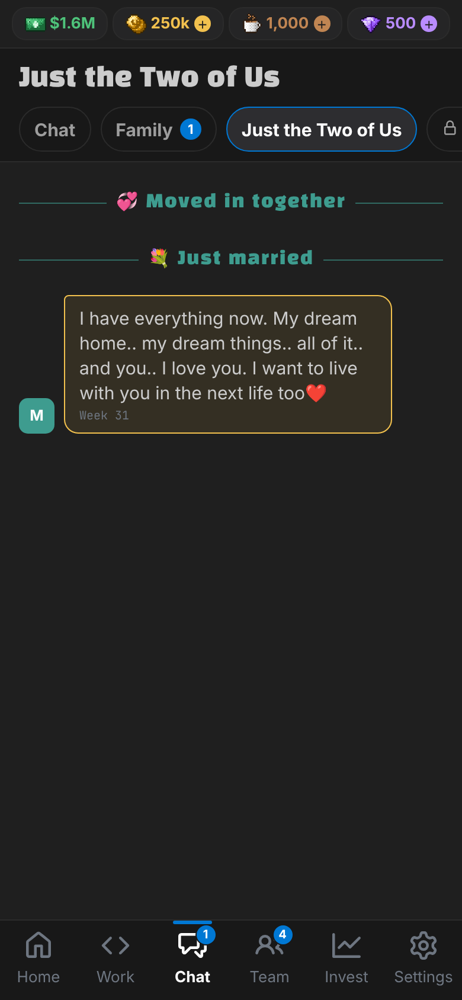
Married life: chores 🧺#
Once married, the Date slot disappears from your schedule. Instead, tapping a day slot shows a + Help with housework check at the top. You do it on top of that day's activity, so it takes no slot (stress +3, stamina −3 a day).
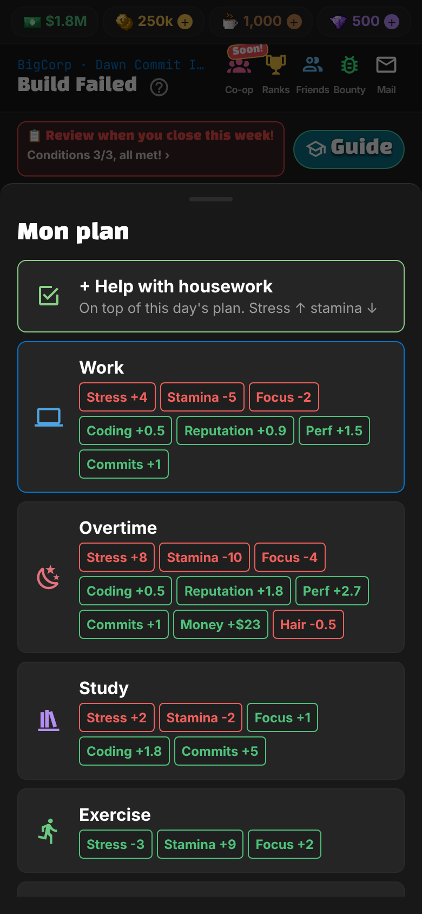
| Situation | Result |
|---|---|
| At least 1 chore that week | No problem. It adds to the running count for the baby condition |
| 0 chores that week | Wife's affinity −30 + next week I did all the housework this week. Not a single dish from you? (Sorry. I'll do it next week (stress +20) +2 / Work is just busy −10) |
| 0 parenting that week with a child | Another −30 + You didn't see our kid once this week. (I'm sorry. This weekend is for the kid (stress +20) +2 / Once this project is done… −10) |
| Work in a weekend slot | Working on the weekend? affinity −2 |
| Affinity 0 | The divorce talk (below) |
Affinity losses come out of overflow love first. Build up plenty of overflow love and even if you skip chores once in a busy week, your real affinity does not drop. But the baby condition (30 overflow) drops along with it, so be careful.
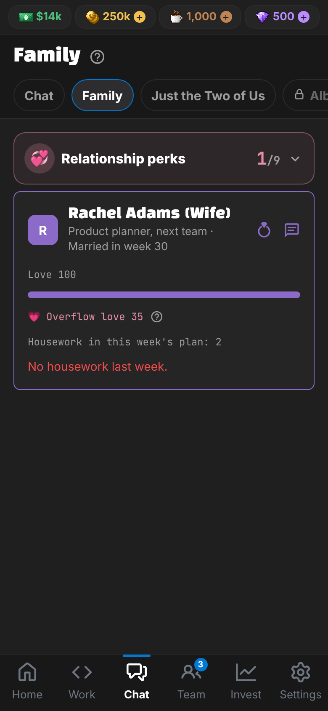
Relationship perks (turned on by overflow love)#
Open the Relationship perks card at the top of the Family tab to see which perks are on right now. Every one whose condition is met applies at once, and a divorce or getting caught juggling turns them all off.
| Perk | Condition | Effect |
|---|---|---|
| Living together | Living together (no overflow needed) | Her messages cost half |
| Newlyweds | Had newlywed life, before the baby | Chores until the baby offer 29 → 15 |
| Butterflies | Dating, married + 30 overflow | Stress −5 every week |
| Someone in your corner | 50 overflow | Stress −5, focus +10 every week |
| Dual income | Married + 70 overflow | Weekly pay +50% (does not stack with Hannah's special allowance) |
| Home cooking | Married + 70 overflow | Stamina +10 every week |
| Burnout shield | Married + 80 overflow | Blocks a burnout once per run (no reputation loss) |
| Anniversary trip | Married + 80 overflow | Stress −20 every 13 weeks after marriage (work goes on as usual) |
| Family person | Child + 100 overflow | Reputation +3, performance review +3 every week |
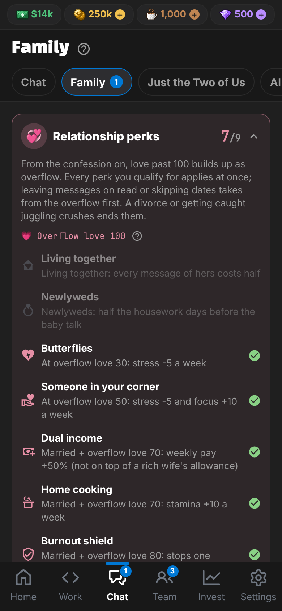
Baby 👶#
| Baby offer conditions (all of them) | Value |
|---|---|
| Married for | 15 weeks or more |
| Total chores this run | 29 (15 if you had newlywed life) |
| Overflow love | 30 or more |
| Newlywed period | After the 15 weeks of newlywed life are over (it does not come during it) |
| Child | None yet, and never declined |
The offer is Honey, I want a baby who looks like you.
- "Me too. Let's have a baby who looks like both of us." → the baby is born, affinity +10, stress +5. The label next to her name becomes ○○'s mom, a Parenting slot opens in the schedule, and Album opens in the messenger.
- "Just the two of us is enough for me" → affinity −5, I don't think I'll bring this up again. It is over for this run. Leaving it on read is the same as declining.
The 15 weeks of newlywed life almost overlap with the 15-weeks-of-marriage condition, so it is only about 1 week later. Newlywed life halves the chore condition and fills a lot of overflow love too, so do it if you can.
The parenting slot and baby-stage messages#
Parenting uses one schedule slot (stamina −5, stress −2, money −$15 a day). 1 parenting = 1 child growth. During the baby stage, 3 kinds of her messages come in rotation.
| Her message | Caring reply | Busy reply |
|---|---|---|
| Let's take the baby out this weekend, the three of us! | −$385, stamina −30, stress +30, affinity +2 | Coding +10, stress +10, affinity −12 |
| Can you take the night feeding? (until kindergarten) | Stamina −30, stress +30, focus −10, +3 | Stamina +5, stress +10, −15 |
| The baby stood up alone for the first time today (once, until kindergarten) | Reputation −15, performance −2, stamina −20, stress +20, +2 | Reputation +10, performance +2, stress +8, −10 |
Besides these, while you have a child, 6 kinds of family messages come now and then: the first word (…"bug"), a 3 AM feeding and a deploy alert, daycare waitlist #47, the Dad and his laptop drawing, a grandparent's visit, and news of a fever from daycare.
Child growth, child affinity and child messages 🎒#
For your child to grow to the next stage, you need both a parenting count and child affinity. Fill only the parenting and fall short on child affinity, and they stop right before the stage, showing 🏠 Your child moves up to ○○ once your kid's affection reaches N.
| Stage | Total parenting | Child affinity | Child message set |
|---|---|---|---|
| Baby | 0 | — | 20 little-kid messages |
| Kindergartner | 6 | 30 | 20 little-kid messages |
| Elementary schooler | 12 | 50 | 20 elementary messages |
| Middle schooler | 18 | 70 | 22 teen messages |
| High schooler | 24 | 90 | 22 teen messages |
| University student | 30 | 110 | 18 university messages |
Child affinity starts at 30 at birth and has no cap. At each week close your child sends 1 message, and two replies show right under the child card in the Family tab.
| Reply | Child affinity | Other effects |
|---|---|---|
| ① Play with them / look after them | +5~+7 | Stamina −30 to −40, stress +20 to +30, a little money (up to −$769) |
| ② Busy | −5 | Stamina +5 to +10, stress −20 to −30, plus one of coding +1 to +3, focus +2 to +5 or money |
| No reply | −8 at next week's close | — |
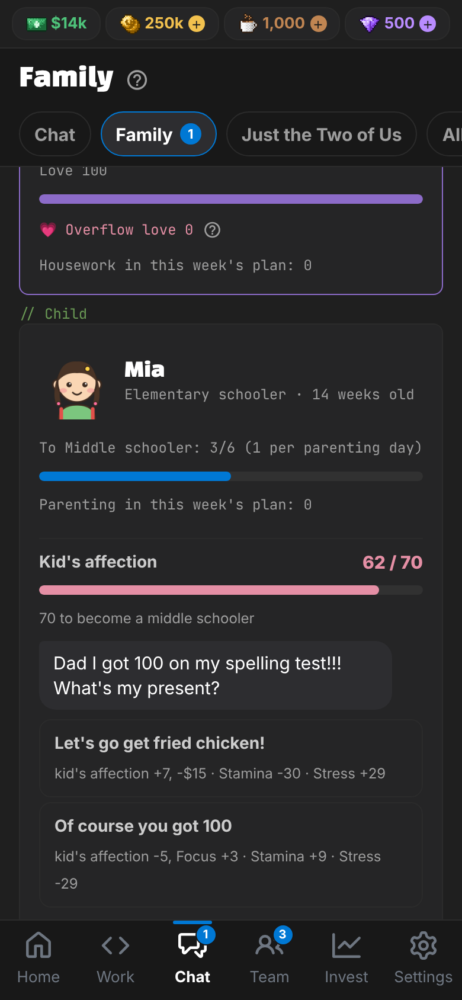
- 2 days of parenting a week is enough. More only speeds up kindergarten and elementary a little; university never comes faster than 16 weeks because of child affinity (30 → 110).
- But always reply ① to child messages. One ② (−5) or leaving it on read (−8) wipes out 1 or 2 ①s.
- The ① reply is heavy: stamina −30 to −40, stress +20 to +30. In a real run, parenting and chores pile into all 6 slots and burnout weeks happen, so university takes quite a bit longer than 16 weeks. In rest weeks, parenting and child messages stop too.
- So if you aim for a child ending, have the baby as early as possible and leave plenty of time until the end of the run.
Child endings 🎓#
Each time your child enters kindergarten, elementary, middle school, high school and university, they send you a message themselves (you must answer). Your answers add up, and the last university message decides one child ending. It is only recorded if you are still married at week 100.
- The child who came back to repay you: send them abroad to study in the university message. It costs a lot.
- The child who drifted: comes when a child you raised strictly or spoiled cannot go abroad.
- Second-generation developer: a child you coded with from an early age.
- A free spirit: a child you let play as they liked.
- The self-made kid: the trickiest ending.
You get 1 child ending per run, so seeing all 5 takes 5 runs.
The family album 📷#
Album in the top row of the messenger opens when the baby is born. Before that it shows 🔒 Opens once you are parents. When the baby is born, your story from the first crush on is bound into an album. Tap Open and it turns page by page like a book, and each photo has a line about that day and a word from Mom.
| Page | How many | How it is decided |
|---|---|---|
| Crush, dating, marriage | 1 each | 1 of 10 kinds each, this run (changes every run, may repeat) |
| Baby is born | 1 | Fixed |
| Kindergarten, elementary, middle, high school | 1 each | The photo for the answer you picked in that stage's child message (3 kinds each) |
| University | 1 | Send them → The airport / refuse → The closed door |
| The End | 1 | After the university choice, stamped with that run's child ending |
A run has at most 9 photos (+ The End), and there are 45 kinds of photos in all (crush 10, dating 10, marriage 10, baby 1, child 14). Make the university choice and the album opens once by itself, and turning the last page closes it with Your child is a university student now. This is where the album ends.
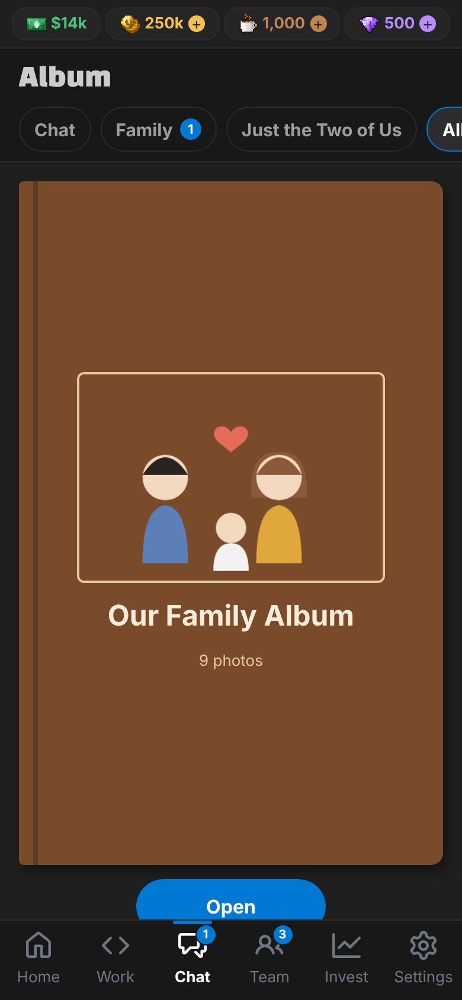
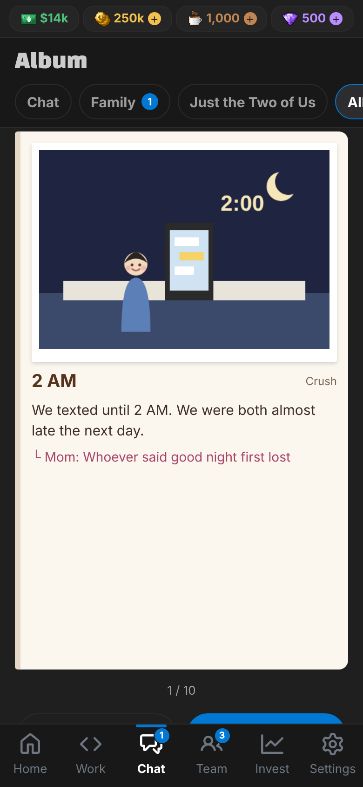
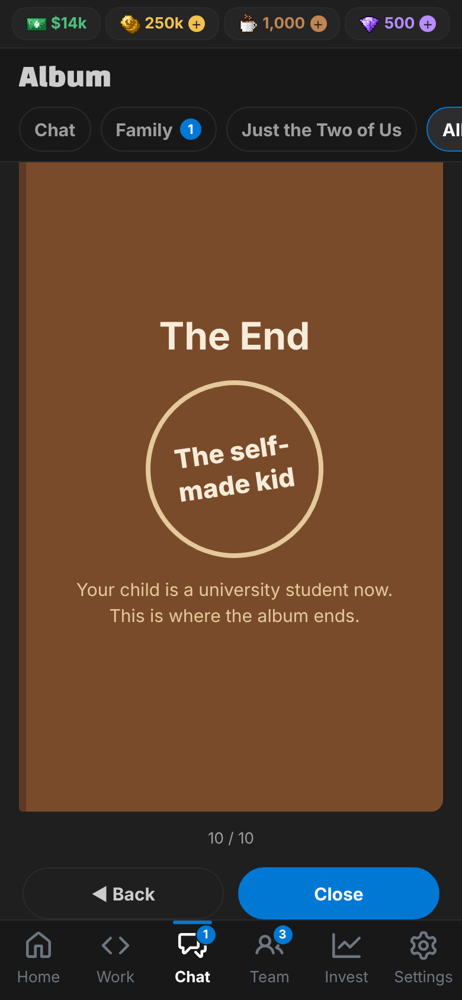
The album is that run's record, so the next run starts with an empty album. There is no way to keep photos across runs. A divorce takes the child's photos away along with the child. If you want to see all 45 photos, pick different kindergarten, elementary, middle and high school answers each run (in 3 runs you see all 12 school photos).
Breakups, divorce and events after marriage 💔#
Breaking up while dating#
- A week with 0 dates: affinity −30 + We didn't see each other once this week… I'm a bit hurt. (I'm sorry. Let's go on a date next week, promise (stress +20) +2 / Work has been crazy… −8)
- Affinity 0: I don't think this is working anymore. Let's break up. → Ask her to stay (gift -$385, stamina -20, stress +30) 30% success (+8) / Okay. Thank you for everything breakup. Leaving it on read counts as agreeing.
Divorce while married#
When your wife's affinity hits 0, I'm worn out. Let's get a divorce. comes.
| Reply | Result |
|---|---|
| Try to win her back (flowers and a letter, a trip -$769, stamina -20, stress +30) | 30% success: affinity +8, …I'll trust you one more time. / 70% failure: the $769 is spent and you divorce |
| …Okay | Divorce |
| (left on read) | Divorce |
- No new relationships form that run. The child, the parenting slot and the child's photos leave with her.
- Until the run ends: reputation locked at 0, stress never drops below 70, focus never rises. Career endings that need reputation (like CTO at last) are practically blocked.
- Finish all 100 weeks and the divorce ending is recorded, while the marriage, living together, newlywed, taste and child endings are all void.
- Condition
- −30 for every married week with 0 chores (and 0 parenting with a child) → affinity 0 → …Okay or leaving the divorce message on read, or failing Try to win her back → finish all 100 weeks like that
- Reward
- 1 Standard Pack
- Tip
- If you are after it for the codex, just turn off all chores right after the wedding. Give up on the rest of that run.
- Condition
- 8 or more weeks after the baby is born, with 4 or more days of parenting in every one of those weeks (even one week with 3 or fewer rules it out for that run). Weeks resting from burnout or sick leave do not count
- Reward
- 1 Standard Pack
- Tip
- It pairs well with the child endings. Lock in 4 parenting slots + 2 work slots.
All family endings 📖#
The living together, newlywed and taste endings each pay 1 Epic Pack; child, devoted husband and divorce pay 1 Standard Pack. All are only recorded if you are in that state at week 100, and marriage + living together + newlyweds + taste + child + devoted husband can all be recorded in one run.
| Heroine | Living together ending | Newlywed ending |
|---|---|---|
| Emily | Under One Roof with Emily | Newlyweds under High Ceilings |
| Rachel | Rachel's Move-In Roadmap | Rachel's Perfect Floor Plan |
| Megan | Duo Queue with Megan | Sea-View Newlyweds with Megan |
| Chloe | Chloe's Studio by the Lab | A Honeymoon Instead of a Conference |
| Brooke | Morning Routine with Brooke | Brooke's Penthouse Mornings |
| Lauren | Same Front Door, 7 Years Later | Lauren's House with a Yard |
| Zoe | Zoe's Bug-Free Home | Zoe's 5-Minute-Commute Honeymoon |
| Kayla | Moving In with Kayla, Like a First Commit | Log-Cabin Newlyweds with Kayla |
| Amanda | 3 a.m. at Home with Amanda | Quiet Deploys by the Lake |
| Newlywed ending | Condition |
|---|---|
| Newlyweds under High Ceilings | Marriage → dream home within 15 weeks → accept the newlywed offer → still married at week 100 |
| Rachel's Perfect Floor Plan | Same |
| Sea-View Newlyweds with Megan | Same |
| A Honeymoon Instead of a Conference | Same |
| Brooke's Penthouse Mornings | Same |
| Lauren's House with a Yard | Same |
| Zoe's 5-Minute-Commute Honeymoon | Same (Dev influencer title) |
| Log-Cabin Newlyweds with Kayla | Same (Dev influencer title) |
| Quiet Deploys by the Lake | Same (Dev influencer title) |
Living together ending conditions: own a home (a studio or bigger) while dating and accept the move-in offer → living together or married at week 100. The 6 taste endings are in the cards above, and marriage endings are in each heroine guide.
FAQ#
- I turned down the move-in offer. Can I get it again?
- Not that run. It comes again next run. Even after declining, newlywed life is still possible with just the dream home (you only miss the living together ending and half price).
- I bought a home, but the move-in offer isn't coming.
- It does not come the week you buy; it comes at the end of the week after you buy. Also, shop units, logistics warehouses, resorts and farmland are not homes. It has to be a studio, officetel, apartment or country house/villa.
- I married Hannah, but Just the Two of Us won't open.
- Hannah, Sophie, Claire and Angie have no living together, newlywed life or parenting.
- Do the perks end when newlywed life ends?
- Newlywed lines end after 15 weeks, but the half the chores until the baby perk stays until the baby comes. If you lived together, half price continues too.
- My child won't grow past kindergarten.
- Child affinity is short. Answer ① to the messages under the child card in the Family tab. With lots of ② or leaving them on read, they will never grow.
- Does more parenting make them grow faster?
- At 2 or more days a week, child affinity is the bottleneck all the way to university, so it does not get faster. But The devoted husband needs 4 days every week.
- Do album photos stay into the next run?
- No, the album starts over every run.
- I forgot the chores. Is it an instant divorce?
- No. It is −30 for that week (taken from overflow love first), and the divorce talk only comes once affinity hits 0. Even then you have the 30% Try to win her back.